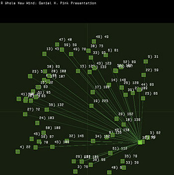

|
Situated Digital Archaeology |

|

|

|
|
Artworks -
Community Domain artworks
|
|
Written by Steve Dietz
|
|
Dec 29, 2005 at 01:25 PM |
|
 50 - 100 san jose locals will be interviewed to collect points of cultural importance (which will be mapped). These initial interviewees will be selected from 3 primary language speaking groups in San Jose (English, Spanish & Vietnamese or possibly Chinese). These people will be chosen to represent a cross section of their language group (age, gender, origin) and surveyed for locations of cultural importance including home, work, faith and social obligation.
This data will form a scatter graph for each individual connected by their route to and from and means of access (bus, car, walking).
20-30 from each group will be given disposable video cameras and asked to shoot 1-3 minutes of video at selected locations.
This video will be diced up and placed onto a streaming server in chunks of 20 seconds.
The video will be knitted together based on location and connection (people, language, proximity, method of transportation) and a traversal of the intersecting graphs represented by each individuals travels.
Viewers will be given the option of reviewing located video or video related to or at nearby nodes.
Graphs of overlapping interest/community will be created and made available at nodes and along paths to nodes to be retrieved via the cell phone network or www.
All interviews will take place in the language of the speaker to represent value to the community. |
|
Last Updated ( Mar 17, 2006 at 12:21 PM )
|